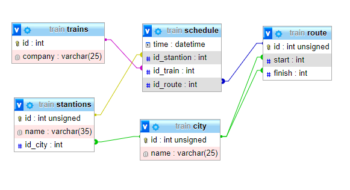

Інфологічна модель відображає реальний світ у деякій зрозумілі людині концепції, цілком незалежні від параметрів середовища збереження даних. Існує множина підходів до побудови таких моделей: графові моделі, семантичні мережі, модель "сутність-зв'язок" і т.д. Найбільше популярної з них виявилася модель "сутність-зв'язок" або названа ще ER-моделлю (від англ. Entity-Relationship, тобто сутність-зв'язок).
На використанні різновидів ER-моделі заснована більшість сучасних підходів до проектування баз даних (головним чином, реляційних). Модель була запропонована Ченом (Chen) у 1976 р. Моделювання предметній області базується на використанні графічних діаграм, що включають невеличке число різнорідних компонентів. У зв'язку з наочністю уявлення концептуальних схем баз даних ER-моделі одержали широке поширення в системах CASE, що підтримують автоматизоване проектування реляційних баз даних.
Зв'язок Міста - Станції представляє собою зв'язок 1:М (один до багатьох), оскільки в одному місті може бути декілька станцій
Зв'язок Маршрут - Міста представляє собою зв'язок 1:М (один до багатьох), оскільки одне місто може бути входити в декілька маршрутів
Зв'язок Розклад - Потяг представляє собою зв'язок 1:М (один до багатьох), оскільки один потяг зустрічається неодноразово в розкладі
Зв'язок Розклад - Станції представляє собою зв'язок М:1 (один до багатьох), оскільки одині і ті ж станції зустрічається неодноразово в розкладі
